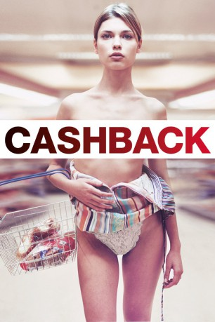

#559 Cashback
 
 IMDB-Wertung: 7.2 / 10
IMDB-Wertung: 7.2 / 10  Metascore: 54
Metascore: 54 
Als seine Freundin mit ihm Schluss macht, leidet Kunststudent Ben an Schlaflosigkeit. Um die nächtliche Zeit dabei sinnvoll zu nutzen, nimmt er einen Job im Supermarkt an: die Nachtschicht. Dabei entdeckt Ben seine Fähigkeit, die Zeit anzuhalten und beginnt die in der Bewegung "eingefroreren" Menschen um ihn herum zu malen. Besonders die hübsche Kassiererin Sharon hat es ihm dabei angetan...
Jahr: 2006
Dauer: 102 Minuten
FSK: 12
Land: England Studio: Atlantic FilmTonspuren: DD5.1 - ,
Untertitel:
Auflösung: 1080p (1920x816) Größe: 7383 MB
Genre: Komödie, Drama, Liebe
Regisseur: Sean Ellis
Drehbuch: Sean Ellis
Soundtrack: Guy Farley
Darsteller:
 Michelle Ryan als Suzy
Michelle Ryan als Suzy- Sean Biggerstaff als Ben Willis
- Shaun Evans als Sean Higgins
- Emilia Fox als Sharon Pintey
- Celesta Hodge als Deer Girl in Sainsbury's
 Michael Dixon als Barry Brickman
Michael Dixon als Barry Brickman- Cherie Nichole als Shampoo / Frozen Girl 2
- Lene Bausager als Woman with Trolley
- Keeley Hazell als Frozen Girl in Sainsbury's
- Samantha Bloom als Mrs. Booth
- Kubrick Ellis als Dog
- Lucy Holt als Lucy at Proud Galleries
- Daphne Guinness als Anna Shapiro
- Martin Ballantyne als Strip Club Patron , uncredited
- Rebecca Calder als Cinema Date , uncredited
 Jared Harris als Alex Proud , uncredited
Jared Harris als Alex Proud , uncredited- Marysia Kay als Girl in Gallery , uncredited
- Erica Ellis als Canteen Lady
- Jay Bowen als Steve Jenkins
- Kenneth Fahy als Art Class Life Model
- Stan Ellis als Art Class Teacher
- Katie Ball als Art Class Girl
- Stuart Goodwin als Jenkins
- Nia Roberts als Woman at the Till
- Michael Lambourne als Matt Stephens
- Hatti Riemer als Old Lady at Deli Counter
- Kinvara Balfour als Shampoo / Frozen Girl 1
- Winnie Li als Betting Employee
- Irene Bagach als Frozen Beautiful Girl
- Frank Hesketh als Young Ben
- Hayley-Marie Coppin als Swedish Student
- Nadia Alkhashab als Frozen Girl in Sainsbury's
- Christine Fuller als Frozen Girl in Sainsbury's
- Michelle Bentley als Nightclub Girl
- Gary Beeson als Young Sean
- Katarina Olsson als Sean's Mother
- Gayle Dudley als Natalie's Mother
- Nelly Lyster-Smith als Young Natalie
- Henrietta Bass als Ben's Mother
- Emilia Fenton als Tanya
- Nick Hancock als Rory Davies
- Howard Ward als Football Referee
- Roddy Adair als Sainsbury's Islington Footballer
- Lee Wilson als Sainsbury's Islington Footballer
- James Smith als Sainsbury's Islington Footballer
- Wayne Ploughman als Sainsbury's Islington Footballer
- Gary McNulty als Sainsbury's Islington Footballer
- Natalie Denning als Busty Customer
- Matthew Hodgson als 'Spread Eagle' Barman
- Tree Carr als 'Spread Eagle' Girl
Datei: X:\2006(A-F)\Cashback (2006, FSK12, 1920x816).mkv seit 09.03.2015
Festplatte: HD 2005(G-Z)-2006(A-Z)
 Es gibt insgesamt 56 Filme in der Gruppe '2006(A-F)'
Es gibt insgesamt 56 Filme in der Gruppe '2006(A-F)'